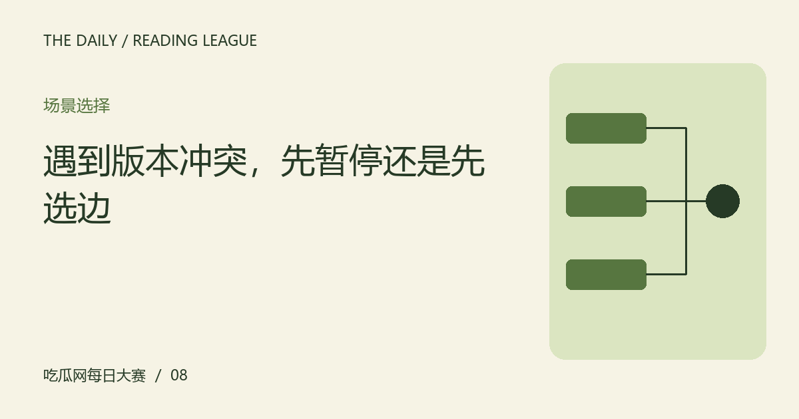

遇到版本冲突，先暂停还是先选边
两份材料不一致时，第一步不是判断谁更像真话。先比较对象、时间和信息来源，让冲突变成可处理的问题。

先检查是否真的在说同一件事
两份说明可能针对不同日期、场次或人员，表面不一致并不一定构成矛盾。把对象与范围列成小表，再比较具体主张。如果材料条件不同，就分别保留，不必为了形成冲突而把它们压成一句彼此否定的话。
来源关系比语气更重要
正式排版、强烈措辞和熟悉账号，都不能单独证明内容正确。检查它是否回到原始材料，是否提供独立信息，以及是否已经被修订。同一条消息的多个转述不应算成多方确认；来源数量与独立证据数量需要分别看待。
允许结论暂时分层
你可能已经确认某项安排变化，但仍不知道原因，也可能只确认有人发表了某种说法。把确定与未知分开，能让讨论继续而不需要立即选边。新的材料出现时更新对应部分，不必把全部问题一次性解决，更不要用想象填平缺口。
暂停传播也有实际作用
如果冲突涉及私人指控或可能造成误解的信息，暂时不转发比给它加一个问号更谨慎。可以保存原始链接与待核对问题，等待明确说明。本站挑战没有要求限时给出判断，慢一点不会失去参赛资格，因为这里并没有真实的名次或抢答机制。
用三栏表整理冲突
假设两张虚构活动通知给出不同集合时间，分别记录版本来源、适用对象和发布时间，再列出需要向哪个公开渠道确认。不要自行猜测组织者出了什么问题。这个练习把选择立场改成选择下一步证据，让不确定情况也有清楚的处理路径。
编辑演示：本文用于展示专题阅读；虚构情境不构成真实人物或事件报道。
下一篇：五分钟阅读之后，怎样检查自己到底记住了什么 →